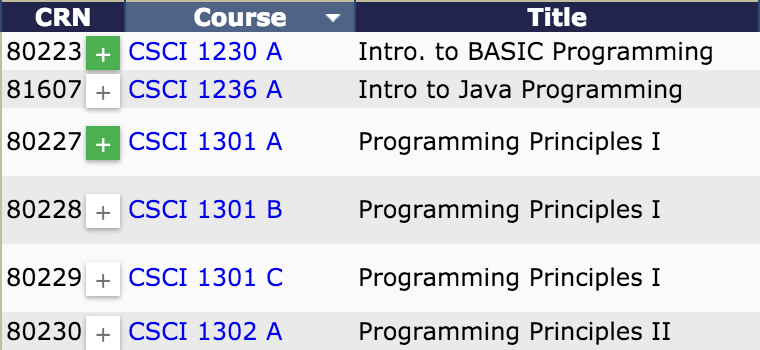

Add your CRNs for the classes you plan to register for by visiting the Georgia Southern Course Search page or by adding them to the right of this message.
Open Course Search or Add CRNs ManuallyMake sure that CRN Tool loads inside WINGS when you open the site and click the "C" icon in your address bar. Not working? Contact me below, and I'll help get you set up.
@notmadeofbeef kobi@kobitate.comGet ready to register! Set your alarm, make sure your laptop is charged, and get ready to paste in those CRNs using CRN Tool!
Add a CRN using the textbox below. Once you've added a CRN, you can delete it by clicking the button.
If you have not found your classes yet, you can quickly save the CRNs from your courses directly from GSU's Course Search page! Simply click the Plus button either in the search results page or in a course summary page.
Items colored green have already been added to your list.
